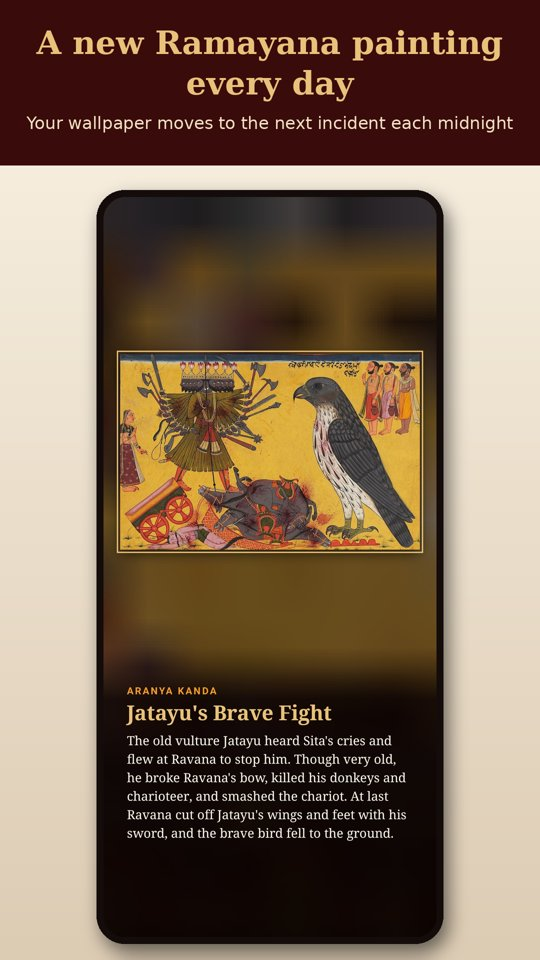
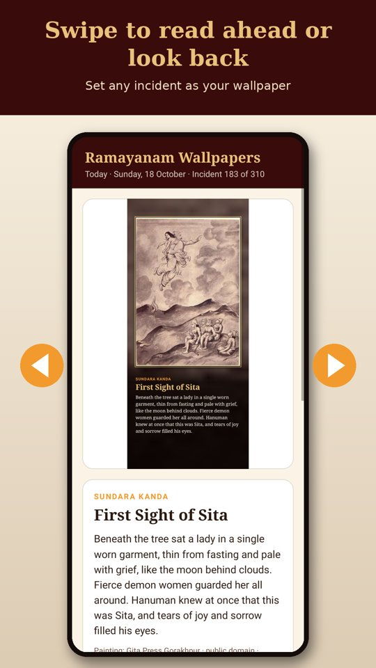

Ramayanam Wallpapers is an Android app that changes your phone wallpaper every day to the next incident of the Ramayana. Each wallpaper shows a classical painting together with a short story of that day's incident.


How it works
- One incident a day. 310 incidents in order through all seven kandas, from Narada's story of the perfect man to Rama's last journey. Day one is the day you install it.
- Painting and story. The wallpaper shows the painting in a gold frame with the kanda, title and a short story underneath. You can hide the story text.
- Home, lock or both. Choose where the wallpaper goes. It changes on its own after midnight and keeps working after a restart.
- Swipe to read. Swipe left or right in the app to read ahead or look back, and set any incident as your wallpaper.
- Six languages. English, Malayalam, Tamil, Telugu, Kannada and Hindi. The app follows your phone's language, or you can pick one.
- Works offline. The paintings come with the app. No account, no ads.
The paintings
The paintings come from Wikimedia Commons: works by Raja Ravi Varma and the Ravi Varma Press, the Mewar Ramayana, Pahari and Mughal Ramayana folios, and other public-domain or freely licensed art. Each one is credited in the app with a link to its source page and licence.
More to come
Ramayanam is the first app in a series. Bhagavatham Wallpapers is the second, and Mahabharatham is planned next.
Contact
Questions or corrections to a story or translation: info@calecutech.com